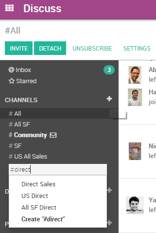

Вы можете использовать каналы для организации обсуждений между отдельными командами, отделами, проектами или любой другой группой, которая требует регулярной связи. Переписку могут видеть все в канале. Это позволяет легко держать в курсе последних событий всю команду .
Создание канала
В discuss есть два типа каналов - public и private.
Публичный канал может быть создан только администратором с правами на запись и может быть просмотрен всеми в организации. Частный канал может быть создан любым пользователем и по умолчанию доступен только пользователям, которые были приглашены на этот канал.
Примечание
Публичный канал лучше всего использовать, когда многим сотрудникам требуется доступ к информации (например, межведомственная коммуникация или объявления компании), тогда как частный канал следует использовать, когда информация должна ограничиваться конкретными пользователями/сотрудниками (например, информация по проекту или конфиденциальная информация).
Настройка канала
Вы можете настроить имя канала, описание, права доступа, автоматическую подписку и работу электронной почты в . Изменение прав доступа к каналу позволяет вам контролировать, какие группы могут просматривать канал. Вы можете сделать канал видимым для всех пользователей, приглашенных пользователей или пользователей выбранной группы. Обратите внимание, что разрешение «Everyone», примененное к частному каналу, позволит другим пользователям просматривать и присоединяться к нему, поскольку он станет публичным.

Как настроить список рассылки
Канал может быть настроен так, чтобы вести себя как список рассылки. В , укажите адрес электронной почты, который вы хотите использовать. Затем пользователи могут отправлять сообщения на канал и получать уведомления с использованием определенного адреса электронной почты. Рядом с названием канала в списке появится значок конверта, это означает, что канал будет отправлять сообщения по электронной почте.
Поиск канала
Если вы не видите канал на панели управления, вы можете выполнить поиск в списке общедоступных каналов, чтобы найти нужный канал или создать новый, щелкните значок «плюс».
Вы также можете щелкнуть заголовок CHANNELS, чтобы просмотреть список всех общедоступных каналов. Это позволяет пользователю самостоятельно присоединяться и покидать общедоступные каналы.
Примечание
Всегда полезно поискать канал, прежде чем создавать новый, чтобы дублирующие записи не создавались для одной и той же темы.